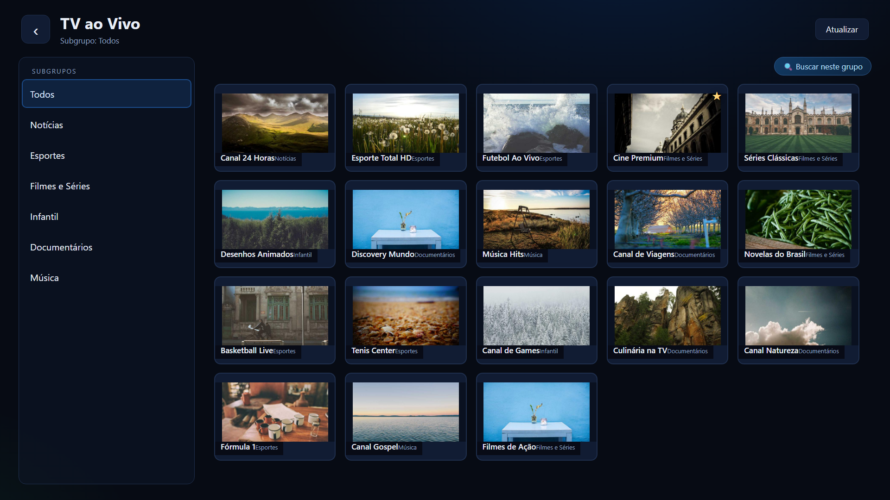
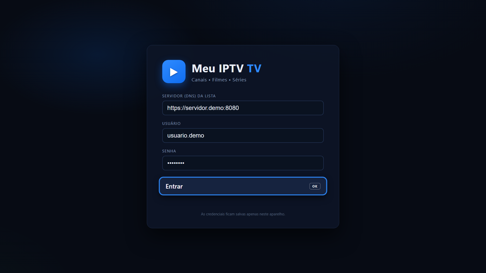
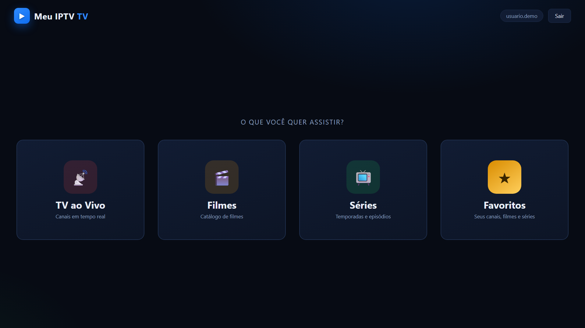
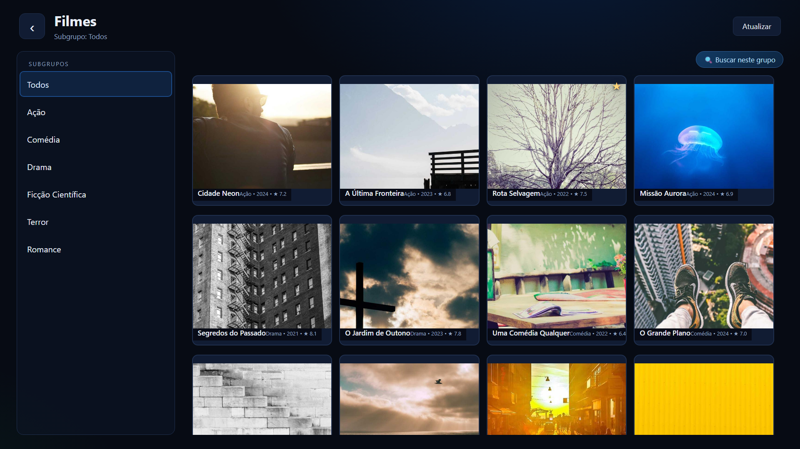
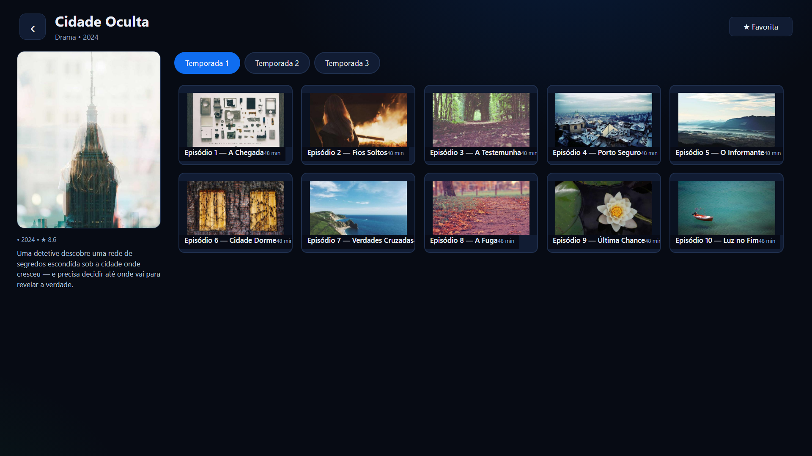
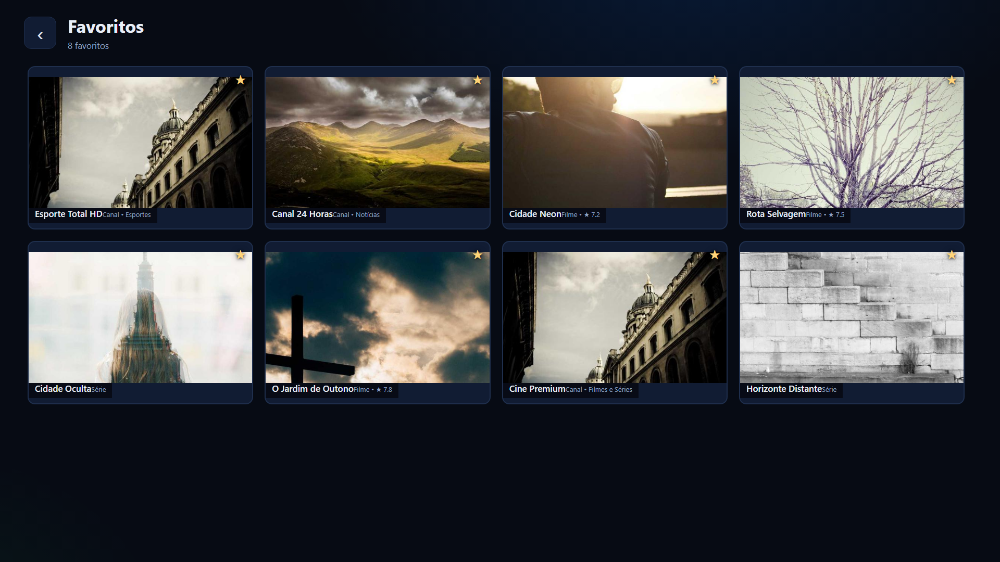
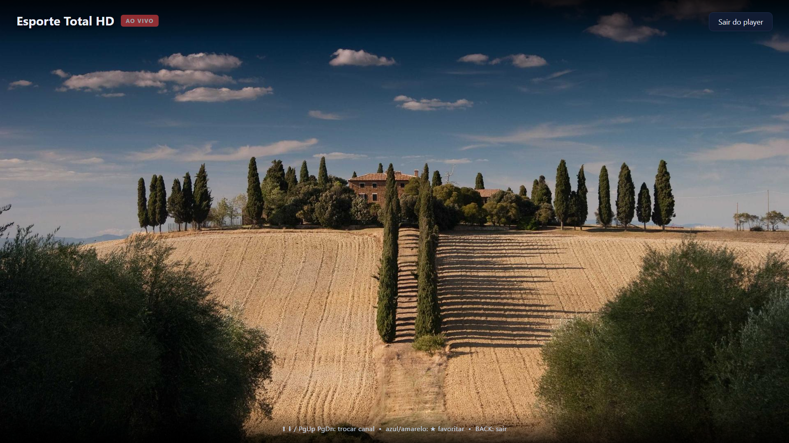

O Meu IPTV TV é um player rápido e feito para controle remoto: canais ao vivo, filmes e séries do seu provedor em grade com miniaturas, favoritos, busca e reprodução em tela cheia.
💡 Não quer instalar nada? Teste a versão web direto no navegador — ideal para computador e TV com navegador.

Pensado para ser usado com o controle remoto — do sofá, sem mouse e sem atalhos complicados.
Grade com miniaturas dos canais do seu provedor (Xtream), organizada por subgrupos.
Catálogo completo com pôsteres, subgrupos, temporadas e episódios com miniaturas.
Favoritou canais, filmes e séries com os botões coloridos do controle — tudo reunido na central de favoritos.
Busca dentro dos subgrupos com teclado virtual no controle — sem precisar de acentos.
Player sem barras de legenda, com auto-ocultação da interface e saída automática ao fim da mídia.
Sem anúncios, sem rastreadores. Suas credenciais ficam salvas apenas no seu aparelho.
Navegação por direcional, grades com 3 a 5 miniaturas por linha e foco bem visível. Clique nas imagens para ampliar.






O Meu IPTV TV é um player: você entra com os dados do seu provedor de IPTV (compatível com Xtream Codes).
Toque em Baixar APK, abra o arquivo e permita a instalação de fontes desconhecidas quando pedir.
TV Box / Android TV: use um app de arquivos
Digite o endereço do servidor, seu usuário e sua senha de IPTV (Xtream). Seus dados ficam só no seu aparelho.
http://servidor:porta
Navegue pelos canais, filmes e séries com o controle. Favoritos e busca deixam tudo mais rápido.
Navegação 100% por controle remoto
Importante: o Meu IPTV TV não fornece, hospeda nem vende canais, filmes ou séries. Ele é apenas um reprodutor para acessar o conteúdo do provedor IPTV que você já contratou. Utilize apenas com serviços para os quais você tenha direito de acesso.
.apk e transfira para o dispositivo (pendrive, nuvem ou navegador da TV).📱 Celular: o app instala normalmente e roda em tela cheia deitada. Ao instalar em aparelhos com Google Play Protect, escolha "Instalar mesmo assim" se aparecer aviso — o APK é assinado e não contém rastreadores.
Sem instalar nada: o Meu IPTV TV Web roda no Chrome, Edge, Firefox e Safari — no computador, no celular e em TVs com navegador (webOS, Smart TV, etc.).
Setas para navegar, Enter para abrir, Backspace/Esc para voltar, F para favoritar, F11 para tela cheia. Mouse e toque também funcionam.
Reprodução de canais ao vivo (m3u8) via hls.js no Chrome/Edge/Firefox e nativa no Safari — com os mesmos favoritos e subgrupos do app.
Entre com servidor, usuário e senha do seu IPTV (Xtream). Opção de proxy CORS na tela de login para provedores que bloqueiam navegador.
Dica: é só F11 (tela cheia) e usar como um app de TV. Se o navegador bloquear o servidor, marque a opção proxy CORS na tela de login.
Sim! Clique em ▶ Versão Web no menu (ou em app/index.html) para usar o app direto no navegador — ótimo para testar sem instalar e para computador. Seu provedor IPTV precisa permitir acesso pelo navegador; se bloquear, marque proxy CORS na tela de login. Na TV, o APK continua sendo a opção mais estável.
Não. O Meu IPTV TV é apenas um reprodutor (player). Todo o conteúdo exibido vem do servidor IPTV que você mesmo configurou com seus dados de acesso.
Sim. Você precisa de uma assinatura ativa de um provedor de IPTV compatível com Xtream Codes (DNS/servidor, usuário e senha).
Android TV, Google TV, TV Box Android e celulares/tablets Android (Android 5.0 ou superior). Interface otimizada para controle remoto.
Sim. As credenciais e os favoritos ficam armazenados apenas no armazenamento local do aparelho. O app não coleta, envia nem compartilha nenhuma informação. Veja a Política de Privacidade.
Como o APK é distribuído fora da Play Store, o Android pede uma permissão única para instalar. Basta tocar em Configurações → permitir o app de arquivos que você está usando e voltar para instalar. É gratuito e sem anúncios.
Sim, é só sair e entrar novamente com os novos dados (servidor, usuário e senha) na tela inicial.